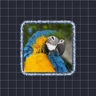

Contours électriques

Dessine un contour lumineux et crépitant autour du calque. Épaisseur l’élargit en une bande lumineuse, chaque valeur de Graine produit un motif différent et son animation crée un crépitement à chaque image, tandis qu’Évolution le fait onduler. Des lignes de contour intérieures sont facultatives.
Réglages
| Réglage | Type | Plage | Par défaut |
|---|---|---|---|
| Distance | Nombre | De 0 px à 300 px | 30 px |
| Épaisseur | Nombre | De 0 à 1 | 0.8 |
| Détail | Nombre | De 0 à 20 | 2 |
| Distorsion | Nombre | De -1 à 1 | 0.5 |
| Couleur | Couleur | – | #FFFFFF |
| Couleur de la lueur | Couleur | – | #3C8CFF |
| Alpha | Nombre | De 0% à 100% | 100% |
| Lueur | Nombre | De 0% à 100% | 50% |
| Intensité | Nombre | De 0 à 3 | 0.42 |
| Graine | Nombre | De 0 à 5 | 0 |
| Évolution | Nombre | De -999 à 999 | 0 |
| Remplissage | Nombre | De 0% à 100% | 100% |
| Intensité du masque | Nombre | De 0 à 1 | 0 |
| Évolution du masque | Nombre | De -50 à 50 | 0 |
| Échelle du masque | Nombre | De 0.01 à 50 | 1 |
| Graine du masque | Nombre | De 0 à 5 | 0 |
| Couleur du masque | Couleur | – | #FF3CDC |
| Afficher les contours | Activé ou désactivé | – | Désactivé |
| Nombre de contours | Nombre | De 0 à 200 | 20 |
| Phase des contours | Nombre | De -999 à 999 | 0 |
| Angle des contours | Angle | De -3600° à 3600° | 0° |